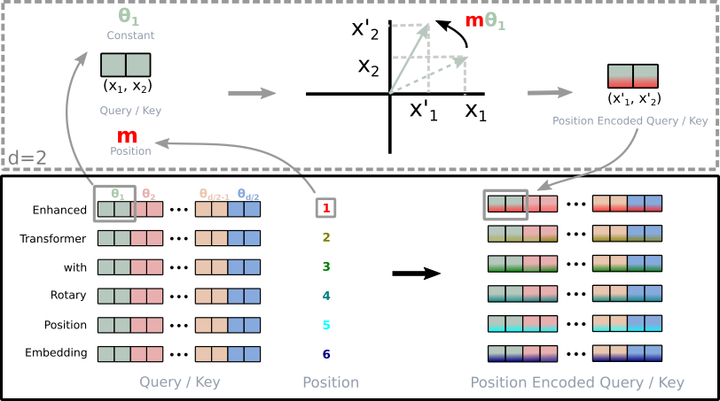

RoPE

Rotary Position Embedding encodes a token's position by rotating pairs of dimensions in its query and key vectors through an angle proportional to that position. Each pair gets its own frequency, geometrically spaced, so the fast pairs distinguish nearby positions and the slow ones carry long-range order.
The reason this is elegant and not merely clever: a dot product between two rotated vectors depends only on the difference of their angles. Rotate the query for position 400 and the key for position 395 and the score you get is the score for a gap of five, wherever in the sequence that gap happens to sit. Relative position falls out of absolute rotation for free, with no extra parameters and no bias matrix.
Two conventions, one right answer per checkpoint
Rotating a pair requires deciding which dimensions constitute a pair, and there are two answers in circulation:
- Interleaved: pair dimension
2iwith2i+1, so the pairs are adjacent. This is what the original llama2.c does, and it is the obvious reading of the paper. - rotate_half: pair dimension
iwithi + head_dim/2, so the first half of the vector pairs with the second. This is what HuggingFace'srotate_halfdoes, and therefore what essentially every published checkpoint was trained with, because essentially every published checkpoint was trained through transformers.
Neither is more correct in the abstract. They are the same rotation applied to a different permutation of the axes, and a model trained under either works fine. What matters is agreeing with whatever the weights were fitted under, and the weights do not come with a note.
Why getting it wrong produces no error
This is the part worth internalising. Both conventions are norm-preserving rotations through the same set of angles. Pick the wrong one and there is no NaN, no overflow, no gradual drift, no assertion and no warning. Vector lengths are unchanged. Attention scores stay in the range softmax expects. Every intermediate tensor looks exactly as healthy as it did before.
What has actually happened is that the model is attending by a scrambled notion of distance: tokens that should be five apart score as though they were some other distance apart, consistently but wrongly. From outside, the result is a model that is a bit vague, loses the thread over long spans, and repeats itself, which is an exact description of a small model being small. There is no observation that separates the two except comparing against a reference or checking a fact.
What it cost, measured
This kernel used the interleaved convention for a long time, on the strength of having started from llama2.c, and nothing looked broken. Switching to rotate_half with the same checkpoint, prompt and seed:
| Convention | Output for "The capital of France" |
|---|---|
| Interleaved (wrong) | "The capital of France." then blank lines |
| rotate_half (correct) | "The capital of France is Paris. Paris is a city known for..." |
At token level, the highest-probability first tokens went from '\n', '\n\n', 'ity' and ' capital' to 'The', 'Paris' and 'France'. The wrong version was not producing garbage. It was producing a model that had lost track of what the prompt was about and defaulted to whitespace.
One checkpoint genuinely wants the interleaved convention: an actual llama2.c model, trained by that code. So the choice is recorded per checkpoint in Config::rope_interleaved and written into the file header at conversion time, so the kernel never decides it globally. A global constant here is a bug waiting for the second model.